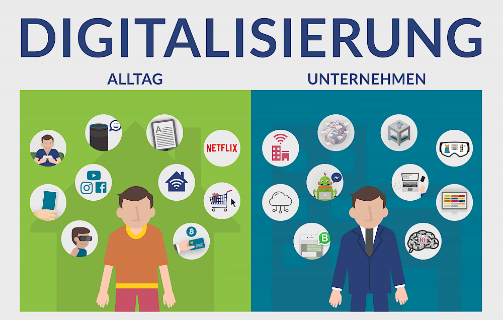

Digitalisierung
Was ist Digitalisierung?
Digitalisierung beschreibt die Nutzung neuer digitaler Technologien mit dem Ziel, soziale und wirtschaftliche Prozesse zu verbessern. Durch diese Modernisierung transformiert die Digitalisierung die Unternehmenskultur, zum Beispiel im Hinblick auf Kundenkommunikation und Finanzierung.
Die Geschichte der Menschheit ist durch Entdeckungen, Erfindungen und Entwicklungen gekennzeichnet. Diese erfolgten meist in kleinen Schritten, doch manchmal fanden sie in großen Schüben statt. So wurden die Menschen mit der agrarischen Revolution sesshaft, so veränderte die industrielle Revolution mit Dampfkraft und Elektrizität das Umfeld. Nunmehr sind wir mitten im Zeitalter der Digitalisierung.
Ihre Auswirkungen werden alle Lebensbereiche betreffen. Dies wird sich insbesondere im Bildungsbereich und der Arbeitswelt zeigen. Im Übergang von menschlicher zur künstlichen Intelligenz (KI) – Stichwort Industrie 5.0, E-Government, Medizinrobotik, autonomes Fahren – hinkt Europa in vielen Bereichen der digitalen Technologie hinterher, Österreich insbesondere. Den damit verbundenen Ängsten sind die Chancen dieser Veränderungen entgegenzuhalten: Anforderungen und Qualifikationen, mit diesen neuen Möglichkeiten umzugehen, werden sich grundlegend ändern.
Digitalisierung Vor- und Nachteile
Niemand kann bestreiten, dass der digitale Wandel in den letzten Jahren alle Lebens- und Arbeitsbereiche fundamental verändert hat. Doch die Auswirkungen sind nicht nur positiv. Digitalisierung bringt Vor- und Nachteile mit sich.
Digitalisierung Vorteile
- Digitale Technologien machen deinen Alltag bequemer und sparen Zeit sowie Kosten.
- Als Arbeitsnehmer profitierst du außerdem von zeitlicher und örtlicher Flexibilität. Du kannst arbeiten, wann und wo du willst. Das kann auch zu einer besseren Work-Life-Balance führen und die Vereinbarkeit von Beruf und Familie verbessern.
- Die Arbeitsplätze werden immer anspruchsvoller und interessanter – monotone Fließbandarbeit kann von Maschinen übernommen werden.
- Arbeitsprozesse werden optimiert. So werden viel Zeit und Ressourcen gespart – und damit Geld!
Digitalisierung Nachteile
- Durch die Optimierung und Automatisierung können bestehende Arbeitsplätze wegfallen, die keine hohe fachliche Kompetenz erfordern.
- Die Digitalisierung ist enorm schnelllebig. Unternehmen müssen fortlaufend mit dem technologischen Fortschritt mithalten. Das erfordert neue Software, Maschinen und auch qualifiziertes Fachpersonal, was für das Unternehmen sehr teuer werden kann. Auch die Anforderungen an das Personal ändern sich ständig, denn es muss lernen, mit der neuen Technologie umzugehen.
- Da sich meist nur die großen Unternehmen die Entwicklung neuer und innovativer Produkte leisten können, wird eine „Winner-takes-it-all-Wirtschaft“ gefördert, die zu der Entstehung von Monopolen führt (z.B. Google bei Suchmaschinen).
- Da alle Daten online erfasst werden, stellt sich auch die Frage der Datenverarbeitung und des Datenschutzes. Durch gezieltes Sammeln von Daten können Unternehmen wie Google oder YouTube dich besser einschätzen. Das führt dazu, dass die Unternehmen dich mit personalisierten Werbungen zum Kauf von Produkten verleiten können. Aber auch Dritte können sich Zugang verschaffen und die Daten missbrauchen.
Herausforderungen und Chancen
Die Digitalisierung stellt viele Unternehmen durch ihre Schnelllebigkeit vor eine große Herausforderung. Die Anschaffung neuer Technologien ist meistens sehr teuer und erfordert zudem qualifiziertes Fachpersonal. Aber auch die bestehenden Arbeitnehmer müssen sich an die neue Technik und Software anpassen. Außerdem kann es passieren, dass Dienstleistungen automatisiert werden, auf deren manuelle Umsetzung sich ein ganzes Unternehmen spezialisiert hat. In diesem Fall würde niemand mehr die Angebote des Unternehmens benötigen. Dann ist meistens eine komplette Umstrukturierung des Unternehmens erforderlich, was ziemlich zeitaufwendig und teuer ist. Es gibt aber auch Positivbeispiele von Unternehmen, die eine solche Umstrukturierung als Chance genutzt haben: Zum Beispiel war die erfolgreiche Streaming-Plattform Netflix lange Zeit ein DVD-Verleih-Unternehmen, bis es den sich verändernden Markt erkannte und zu einer Streaming-Plattform wurde. Durch einen personalisierten Algorithmus kann Netflix dir außerdem immer Filme und Serien vorschlagen, die genau zu dir passen. So verlieren sie dich nicht als User.
Digitalisierung Beispiele
Beispiele für die Digitalisierung sind sowohl in der Arbeitswelt zu finden, als auch im Alltag.
Digitalisierung in der Arbeitswelt
- Die Digitalisierung von Prozessen ermöglicht es in manchen Berufsbranchen, von überall aus zu arbeiten. Viele Arbeitnehmer nutzen deshalb das Home Office.
- Große Datenmengen aus dem Unternehmen können leicht analysiert und visualisiert werden: So lassen sich Prozessabläufe leichter optimieren. Zum Beispiel sammeln Google oder Facebook deine Nutzungsdaten und können durch einen personalisierten Algorithmus feststellen, welche Inhalte dich besonders interessieren. So können sie dir personalisierte Werbung anzeigen.
- Im Gesundheitswesen wird der Austausch zwischen verschiedenen Ärzten durch digitale Krankenakten erleichtert. Auch die Krankenkassen können durch die Analyse dieser Krankenakten neue Erkenntnisse über die Gesellschaft gewinnen und Vorhersagen über ihre Gesundheit treffen. So können sie für eine Einzelperson leichter entscheiden, welche Versicherungsanträge sie annehmen, ablehnen, oder wo sie Risikozuschläge auferlegen.
Digitalisierung im Alltag
- Digitale Technologien machen deinen Alltag meist bequemer. Außerdem kannst du mit ihnen Zeit sparen.
- Statt Filme auf DVDs oder Videokassetten zu schauen, kannst du sie heutzutage ganz einfach über das Internet streamen.
- Bei langen Autofahrten brauchst du keine Landkarte mehr mitzunehmen — das Navi zeigt dir den schnellsten Weg.
- Wenn du dir bei der Rechtschreibung eines Wortes nicht sicher bist, brauchst du es nicht mehr im Wörterbuch nachzuschlagen — du kannst es einfach googlen.
- Durch kontaktloses Bezahlen brauchst du im Supermarkt nicht mehr nach Kleingeld suchen.